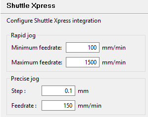

Shuttle Xpress devices¶
Goko provides the following shortcut to support the use of Shuttle Xpress devices.
Predefined configuration¶
Predefined configuration file is available in the shutlleXpress folder of Goko installation folder which binds the Shuttle Xpress button to Goko shortcuts
Compatible shortcuts¶
| Shortcut | Purpose |
|---|---|
| Ctrl + Alt + Shift + A | Enable jogging on X axis |
| Ctrl + Alt + Shift + Q | Enable jogging on Y axis |
| Ctrl + Alt + Shift + W | Enable jogging on Z axis |
| Ctrl + Alt + Shift + Z | Enable jogging on A axis |
| Ctrl + Alt + Shift + L | Start homing sequence |
| Ctrl + Alt + Shift + K | Set current position as 0 on the active axis |
| Ctrl + Alt + Shift + M | Kill alarm |
| Ctrl + Alt + Shift + X | Rapid jog -7 |
| Ctrl + Alt + Shift + C | Rapid jog -6 |
| Ctrl + Alt + Shift + V | Rapid jog -5 |
| Ctrl + Alt + Shift + B | Rapid jog -4 |
| Ctrl + Alt + Shift + N | Rapid jog -3 |
| Ctrl + Alt + Shift + J | Rapid jog -2 |
| Ctrl + Alt + Shift + H | Rapid jog -1 |
| Ctrl + Alt + Shift + G | Stop jog |
| Ctrl + Alt + Shift + F | Rapid jog +1 |
| Ctrl + Alt + Shift + D | Rapid jog +2 |
| Ctrl + Alt + Shift + E | Rapid jog +3 |
| Ctrl + Alt + Shift + R | Rapid jog +4 |
| Ctrl + Alt + Shift + T | Rapid jog +5 |
| Ctrl + Alt + Shift + Y | Rapid jog +6 |
| Ctrl + Alt + Shift + U | Rapid jog +7 |
| Ctrl + Alt + Shift + I | Precise jog -1 |
| Ctrl + Alt + Shift + O | Precise jog +1 |
Preferences¶
The speed and step of the jog motion can be configured in the Shuttle Xpress preferences page.
- Rapid jog performs a continuous jog motion. The feedrate is interpolated between the minimum and maximum feedrate using the outer wheel index.
- Precise jog performs a discrete jog motion. Each rotation step of the inner wheel will perform a motion of the given step at the given feedrate.

The Shuttle Xpress preferences page